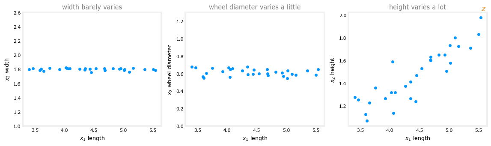
Principal Components Analysis
machine-learning
unsupervised-learning
An optional unsupervised learning algorithm for visualization: reducing data with many features down to two or three, how the principal component is chosen, projection and reconstruction, and running PCA with scikit-learn.
Before this course wraps up its unsupervised learning portion, there is one more optional algorithm to meet, principal components analysis, also called PCA. It is an algorithm commonly used for visualization. If a dataset has a lot of features, say 10, 50, or even thousands, there is no way to plot 1,000-dimensional data. PCA takes data with many features and reduces the number of features to two, maybe three, so the data can be plotted and visualized. Data scientists use it routinely to look at a dataset and figure out what might be going on. This page builds PCA the way the machine learning course does, from pictures and projections; the linear algebra course develops the very same algorithm rigorously in Dimensionality Reduction and PCA, and this page links to the matching sections there for anyone who wants the math underneath each step.
Reducing Many Features to Two or Three
As a running example, take data from a collection of passenger cars. Cars have a lot of measurable features, such as the length of the car, the width, the diameter of the wheels, and the height. How can the number of features be reduced so the data can be visualized?
Start with just two features. Let \(x_1\) be the length of the car and \(x_2\) its width. In most countries, the width of a car has to fit within the width of a single road lane, so width barely varies from car to car; in the United States most cars are about 1.8 meters wide, just under six feet. Length, on the other hand, varies quite a bit. A second version of the example replaces width with the wheel diameter, which varies a little, but still not much. And a third version replaces it with the height of the car, which varies a lot, some cars are much taller than others, and taller cars also tend to be longer:
In the first two datasets, only one of the two features has a meaningful degree of variation, so to get down to one feature you could simply keep \(x_1\) and drop \(x_2\). PCA, applied to either dataset, will more or less automatically decide to do exactly that.
The third dataset is where PCA earns its keep. You would not want to keep just the length and ignore the height, nor keep just the height and ignore the length; both features clearly carry useful information. Instead of being limited to the \(x_1\) axis or the \(x_2\) axis, what if there were a third axis, call it the z-axis, the orange arrow above? To be clear, this new axis is not sticking out of the diagram into a third dimension. It lies flat within the plot, and it corresponds to a combination of \(x_1\) and \(x_2\), something like the overall size of the car. A car’s coordinate along the z-axis, meaning its distance along that arrow, tells us roughly how big the car is, one number in place of two. The next section makes this precise, but that is already the whole idea of PCA. Find one or more new axes, like \(z\), so that measuring the data’s coordinates on the new axes still gives very useful information about each example.
In these small examples the reduction is from two features down to one. In practice, PCA is usually used to reduce a very large number of features, 10, 20, 50, even thousands, down to two or three, so the data can be shown on a two- or three-dimensional plot.
From Three Dimensions Down to Two
Here is a three-dimensional example. Sometimes 3D data, if you could rotate it on a screen, turns out to live on a very thin surface, almost as if all the points lay on a two-dimensional pancake floating inside the three-dimensional space. With PCA, instead of three features \(x_1, x_2, x_3\), each point can be described by two numbers, \(z_1\) and \(z_2\), its position on the pancake, and the data can then be plotted flat. The 3D view below is live, so drag it around to rotate the dataset, exactly like the demo in the videos, and see the pancake edge-on for yourself:
Visualizing 50 Features per Country
One more example, closer to how PCA gets used for real. Suppose there is data about the development status of many different countries. Feature \(x_1\) is the country’s GDP, another feature is the per capita GDP, another is the Human Development Index (a measure of overall progress based on things like lifespan and education), another is life expectancy, and so on, until each country has 50 features. There is no way to plot 50-dimensional data on a two-dimensional monitor. PCA takes those 50 features, \(x_1, x_2, x_3, \dots\), and compresses them down to two features, \(z_1\) and \(z_2\), and the countries can then be plotted:
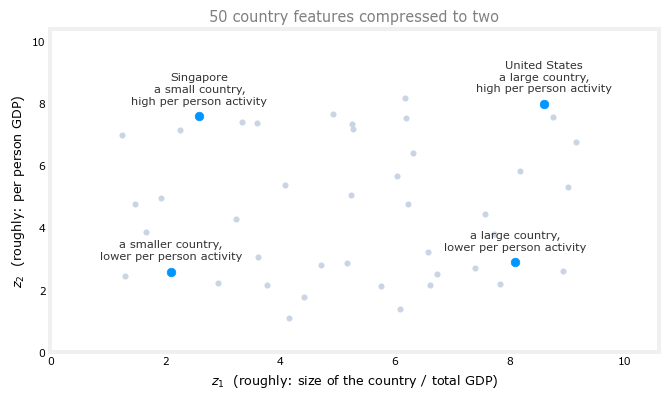
You might find that \(z_1\) loosely corresponds to how big the country’s total economy is (larger countries have more people, hence larger economies), and \(z_2\) roughly to the per person economic activity. The United States, a relatively large country with high per person economic activity, lands up and to the right. A country like Singapore is smaller, so lower on \(z_1\), but still high on \(z_2\). Other countries fill out the other corners.
One more piece of vocabulary. 50 features is sometimes called 50-dimensional data, and reducing it to two features makes it two-dimensional data, which is exactly what makes it plottable. Whenever you get a new dataset, visualizing it this way is one of the most useful first steps, since it helps you understand what the data looks like, and sometimes it helps you spot that something funny or unexpected is going on in the data.
Review Questions
1. What is PCA most commonly used for, and what does it do to the number of features?
TipAnswer
Visualization. PCA takes data with a lot of features (50, 1,000, even more) and reduces it to two or three new features, so the data can be plotted in 2D or 3D and examined, which helps in understanding a dataset and in spotting anything unexpected in it.
1. In the car length versus car width example, why does PCA end up essentially just keeping the length feature?
TipAnswer
Because width barely varies from car to car (roads constrain nearly every car to about 1.8 meters wide), almost all of the variation, and hence almost all of the information, is in the length. When only one feature meaningfully varies, dropping the other loses almost nothing, and PCA more or less automatically makes that choice.
1. In the length versus height example, neither feature can be dropped. What does PCA do instead, and is the new z-axis sticking out of the plot?
TipAnswer
It creates a new axis \(z\) that is a combination of \(x_1\) and \(x_2\), corresponding roughly to the overall size of the car, and represents each car by its single coordinate along that axis. The z-axis does not stick out into a third dimension; it lies flat within the original plot.
How PCA Works
How does PCA actually choose the new axis? Take a dataset with two features, \(x_1\) and \(x_2\), and five training examples. Remember, this is an unsupervised learning algorithm, so there are only the features and no label \(y\). An example might have coordinates \(x_1 = 10\) and \(x_2 = 8\). The goal is to replace the two features with just one, a new z-axis whose coordinate is somehow a good single number for representing each example.
One note on preprocessing comes first. Before applying the next few steps of PCA, the features should be normalized to have zero mean (subtract each feature’s mean). And if the features take on very different scales, think back to the housing example, where the size in square feet could be in the thousands while the number of bedrooms is a small number, then feature scaling should be applied as well, so the ranges are not too far apart. The examples below assume this has already been done.
Projecting onto an Axis
With the axes stripped away, only the five examples and the origin remain, and PCA must pick one axis with which to capture what is important about them. Given a candidate z-axis, each example is projected down to a point on that axis. The word “project” just means taking the example and bringing it to the z-axis along a little line segment that meets the axis at a 90-degree angle (the small square drawn at the meeting point is the standard symbol for 90 degrees). It is the same projection operation developed in the linear algebra notes. Here are three candidate axes for the same five points:
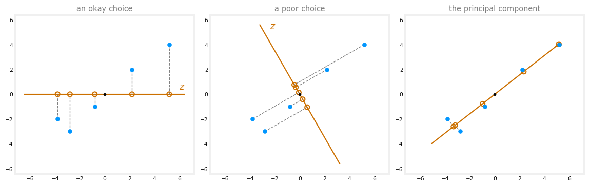
- Left, an okay choice: the axis points along \(x_1\), and the five projected points are pretty spread apart, so this captures quite a lot of the spread, the variance, of the original data, meaning quite a lot of its information.
- Middle, a poor choice: the projections end up quite squished together. The amount they differ from each other, their variance, is much smaller, so much less of the information in the original dataset survives; the five examples have been partially squashed onto each other.
- Right, the best choice of the three: the projected points are quite far apart, capturing a lot of the variation in the original dataset even though each example is now described by just one coordinate instead of two.
The Principal Component
That right-hand axis is called the principal component, the axis such that, when the data is projected onto it, the projections have the largest possible variance. If the data is to be reduced to one axis, the principal component is a good choice, and it is the choice PCA makes. (In an interactive version of this picture, sliding the axis’s angle around shows the projections squishing together and spreading apart, with the maximum spread exactly at the principal component.) A machine learning library like scikit-learn, coming in the next section, finds the principal component automatically. How it manages that without trying every angle is worked out in the linear algebra notes, starting from Choosing the Best Projection Direction.
Coordinates from a Dot Product
How is the z-coordinate of an example computed? Suppose PCA has found the z-axis direction, and along it a length-1 vector, here \((0.71, 0.71)\) (more precisely 0.707 and change). Take the training example at coordinates \((2, 3)\). Its projection onto the z-axis is the dot product of the example with that unit vector, the general projection formula from the linear algebra notes:
\[ \begin{bmatrix} 2 \\ 3 \end{bmatrix} \cdot \begin{bmatrix} 0.71 \\ 0.71 \end{bmatrix} = 2 \times 0.71 + 3 \times 0.71 = 3.55 \]
So the projected point sits at distance 3.55 from the origin along the z-axis, and if one number has to stand in for this example, that number is 3.55.
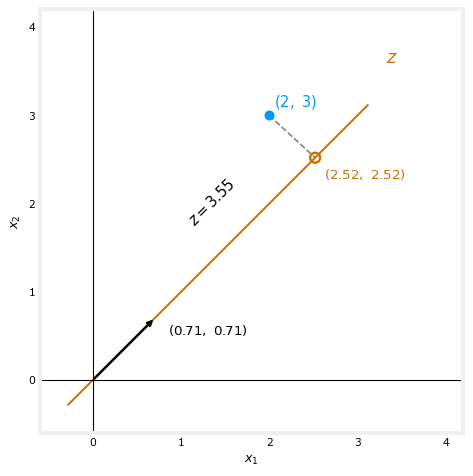
This axis is also called the first principal component. If a second axis is wanted, it will always be at 90 degrees to the first; a third axis would be at 90 degrees to the first and the second, and so on. (In mathematics, “at 90 degrees” is called perpendicular, so the second axis \(z_2\) is perpendicular to the first axis \(z_1\).) With 50 features and three principal components requested, the second axis is perpendicular to the first, and the third is perpendicular to both.
PCA Is Not Linear Regression
A common question is how PCA differs from linear regression. It turns out PCA is a totally different algorithm.
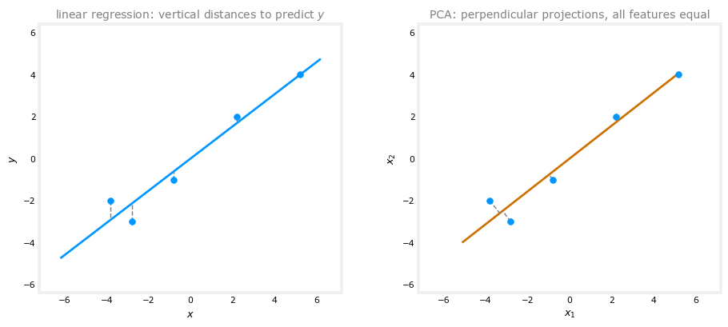
Linear regression is a supervised learning algorithm. The data comes as \(x\) and \(y\), and the fitted line tries to make the predicted value as close as possible to the ground truth label \(y\). The little line segments being minimized are vertical, aligned with the y-axis, because \(y\) is the one number receiving very special treatment. In PCA there is no label \(y\) at all, just unlabeled data \(x_1\) and \(x_2\), and the algorithm is not trying to use \(x_1\) to predict \(x_2\). All features are treated equally, whether there are 2 or 50 of them, and the little segments run perpendicular to the z-axis. The goal is an axis \(z\) such that projecting the data onto it retains as much of the variance of the original data as possible; it turns out that maximizing the spread of the projections corresponds to minimizing the lengths of those perpendicular segments, the distances the points have to move to reach the axis.
With just two features drawn on a flat screen, the two pictures can look a little similar, but with more than two features, which is the usual case, the two algorithms do very different things and give very different answers. Use linear regression when trying to predict a value \(y\); use PCA when trying to reduce the number of features, say to visualize the data.
Reconstruction
One more thing PCA can do. The example at \((2, 3)\) projected to \(z = 3.55\). Going the other way, given only the number 3.55, can the original example be recovered? Not exactly, one number simply does not carry enough information for two, but it can be approximated. The formula is to multiply \(z\) by the same length-1 vector:
\[ 3.55 \times \begin{bmatrix} 0.71 \\ 0.71 \end{bmatrix} = \begin{bmatrix} 2.52 \\ 2.52 \end{bmatrix} \]
which is the orange projected point in the figure above. The approximation \((2.52, 2.52)\) is not that far from the original \((2, 3)\); the difference is exactly the little perpendicular segment. This is called the reconstruction step of PCA. From one number, it produces a reasonable approximation to the original training example.
To summarize, PCA looks at the original data and chooses one or more new axes, \(z\), or \(z_1\) and \(z_2\), and represents the data by its projections onto those axes. That yields a smaller set of numbers per example, small enough to plot.
Review Questions
1. Among all possible choices of the z-axis, which one does PCA pick as the principal component?
TipAnswer
The axis for which the projections of the data have the largest possible variance, meaning the projected points are as spread out as possible. Maximum spread means the projections retain as much of the information in the original dataset as possible; an axis whose projections squish the points together loses information.
1. PCA found the unit vector \((0.71, 0.71)\) for the z-axis. What is the z-coordinate of the example \((2, 3)\), and how is it computed?
TipAnswer
Take the dot product of the example with the length-1 vector, \(2 \times 0.71 + 3 \times 0.71 = 3.55\). The projected point lies at distance 3.55 from the origin along the z-axis, so 3.55 is the one number representing this example.
1. Name two ways PCA differs from linear regression.
TipAnswer
First, linear regression is supervised, with a label \(y\) that gets special treatment, and it minimizes vertical distances to predict \(y\). PCA is unsupervised, has no \(y\), treats all features equally, and minimizes the perpendicular distances to the new axis (equivalently, maximizes the variance of the projections). Second, they serve different purposes. Linear regression predicts a target value, while PCA reduces the number of features, for example for visualization.
1. Reconstruction turns \(z = 3.55\) back into \((2.52, 2.52)\) rather than the original \((2, 3)\). Why is an exact recovery impossible?
TipAnswer
Because the projection threw information away, and one number cannot carry everything two numbers did. Multiplying \(z\) by the unit vector, \(3.55 \times (0.71, 0.71)\), lands back on the z-axis at the projected point, and the gap between that point and the original example, the little perpendicular segment, is exactly the information the single coordinate could not keep.
PCA in scikit-learn
Implementing PCA with the scikit-learn library takes a few main steps:
- Optional preprocessing: if the features take on very different ranges of values, perform feature scaling first. With country data, GDP could be in trillions of dollars while other features are less than 100; scaling helps PCA find a good choice of axes.
- Fit the algorithm to the data with the
fitmethod to obtain the new axes, \(z_1\), \(z_2\), maybe \(z_3\), the principal components.fitautomatically carries out mean normalization, subtracting each feature’s mean, so that does not need to be done separately. (Two or three axes is the usual choice for visualizing in 2D or 3D; the implementation happily produces more, they are just harder to visualize.) - Examine how much each new axis explains the variance in the data, with
explained_variance_ratio_. This shows whether projecting onto these axes retains most of the variability, most of the information, of the original data. - Transform, meaning project, the data onto the new axes with the
transformmethod. Each training example becomes two or three numbers, ready to plot.
Here is what that looks like in code, on a small dataset of six examples with two features. First, reducing to a single principal component:
import numpy as np
from sklearn.decomposition import PCA
X = np.array([[ 1, 1], [ 2, 1], [ 3, 2],
[-1, -1], [-2, -1], [-3, -2]])
pca_1 = PCA(n_components=1)
pca_1.fit(X)
print(pca_1.explained_variance_ratio_)[0.99244289]The explained variance ratio of 0.992 says that this single axis captures 99.2 percent of the variability, of the information, in the original dataset. (Where these ratios come from is worked out in the math course’s five-step PCA algorithm.) Projecting each training example down to its one number:
X_trans_1 = pca_1.transform(X)
print(X_trans_1)[[ 1.38340578]
[ 2.22189802]
[ 3.6053038 ]
[-1.38340578]
[-2.22189802]
[-3.6053038 ]]The first training example, \((1, 1)\), projects to 1.38, meaning its projected point sits at distance 1.38 from the origin along the principal component; the second maps to 2.22, and so on. If this dataset were visualized in one dimension, those are the numbers that would represent the six examples:
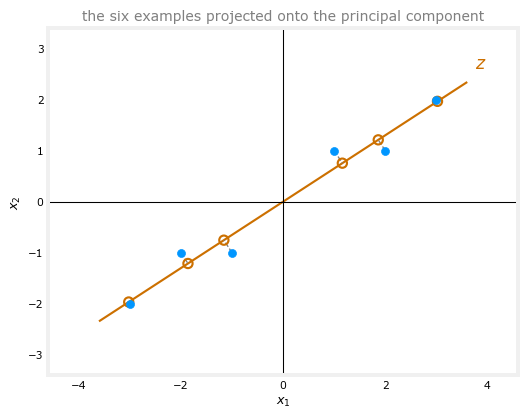
Keeping Two Components
One quick variation deepens the intuition. What if two-dimensional data is “reduced” to two principal components, starting with two dimensions and ending with two? That is not useful for visualization, but it shows how the code behaves. The only change is n_components=2:
pca_2 = PCA(n_components=2)
pca_2.fit(X)
print(pca_2.explained_variance_ratio_)[0.99244289 0.00755711]The first principal component still explains 99.2 percent of the variance, and the second explains the remaining 0.8 percent; together the two numbers add up to 1, because with both axes kept, 100 percent of the variance in this two-dimensional data is explained. Projecting onto both axes:
X_trans_2 = pca_2.transform(X)
print(X_trans_2)[[ 1.38340578 0.2935787 ]
[ 2.22189802 -0.25133484]
[ 3.6053038 0.04224385]
[-1.38340578 -0.2935787 ]
[-2.22189802 0.25133484]
[-3.6053038 -0.04224385]]The first example, \((1, 1)\), becomes the pair \((1.38, 0.29)\), meaning distance 1.38 along \(z_1\) and 0.29 along \(z_2\). And reconstructing from both coordinates gives back the original data exactly, no approximation, since nothing was actually thrown away when two dimensions were kept:
print(pca_2.inverse_transform(X_trans_2))[[ 1. 1.]
[ 2. 1.]
[ 3. 2.]
[-1. -1.]
[-2. -1.]
[-3. -2.]]Advice for Applying PCA
PCA is frequently used for visualization, reducing data to two or three numbers so it can be plotted, like the country data seen earlier. Two other applications come up occasionally; both used to be more popular 10, 15, 20 years ago, but much less so now:
- Data compression. With a database of cars carrying 50 features each, storage or transmission might once have been a real cost, and reducing 50 features to 10 principal components meant one fifth of the space or network cost. With modern storage and networking, this use shows up much less often. (The linear algebra course’s eigenvalues lab works through this exact idea on image data.)
- Speeding up training of a supervised model. With 1,000 features, reducing to 100 via PCA made the dataset smaller, and older algorithms, such as support vector machines, genuinely ran faster on it. With modern algorithms like deep learning, this rarely helps much, and it is more common to just feed the high-dimensional data into the neural network, since PCA has some computational cost of its own. It appears in older research papers, but rarely in current practice.
The most common use today, by far, is visualization. Given a new dataset, PCA reduces it to two or three dimensions so it can be plotted, examined, and understood, and it can reveal insights about the data that would be hard to get any other way.
Review Questions
1. Which preprocessing does scikit-learn’s fit method do automatically for PCA, and which is still your job?
TipAnswer
fit automatically performs mean normalization, subtracting out each feature’s mean. Feature scaling is not automatic. If features take on very different ranges, like GDP in trillions next to features under 100, scale them yourself before fitting so PCA can find a good choice of axes.
1. With one component, explained_variance_ratio_ was 0.992; with two components it was (0.992, 0.008). Interpret both results.
TipAnswer
With one component, the single axis \(z_1\) captures 99.2 percent of the variance, the information, of the original data, so very little is lost by describing each example with one number. With two components, \(z_2\) picks up the remaining 0.8 percent, and the ratios sum to 1 because two axes explain 100 percent of the variance of two-dimensional data; reconstruction from both coordinates is then exact.
1. Besides visualization, what are two older applications of PCA, and why are they less common today?
TipAnswer
Data compression (reduce 50 features to 10 to save storage or transmission cost) and speeding up supervised learning (reduce 1,000 features to 100 so older algorithms like support vector machines run faster). Modern storage and networks made the first mostly unnecessary, and modern algorithms like deep learning handle high-dimensional inputs directly, so the second rarely pays for PCA’s own computational cost anymore.
Lab: PCA and Exploratory Data Analysis
The optional lab for these videos puts PCA to work four times, each a size up from the last. It replicates the lecture example in scikit-learn, visualizes on a small 2-dimensional dataset why not every projection is a good one, watches a 3-dimensional dataset collapse into a 2-dimensional subspace, and finally uses PCA to find hidden patterns in a dataset with 1,000 features. One adaptation note up front. The notebook’s plotly 3D figures are reproduced here fully interactive, so they can be rotated just as in the notebook, while the bokeh scatter and the ipywidgets rotation slider are rendered as static matplotlib equivalents, and the note says so where it happens.
import pandas as pd
import numpy as np
from sklearn.decomposition import PCA
import matplotlib.pyplot as pltThe Lecture Example
The same six-point example from the videos, in code:
X = np.array([[ 99, -1],
[ 98, -1],
[ 97, -2],
[101, 1],
[102, 1],
[103, 2]])
plt.plot(X[:, 0], X[:, 1], 'ro')
plt.show()
Fit PCA with two components. (There is no need to scale the data first, since scikit-learn’s implementation already handles the mean normalization.)
pca_2 = PCA(n_components=2)
pca_2.fit(X)
pca_2.explained_variance_ratio_array([0.99244289, 0.00755711])The coordinates on the first principal component (the first axis) are enough to retain 99.24 percent of the information, the “explained variance”. The second principal component adds the remaining 0.76 percent that is not stored in the first coordinate.
X_trans_2 = pca_2.transform(X)
X_trans_2array([[-1.38340578, -0.2935787 ],
[-2.22189802, 0.25133484],
[-3.6053038 , -0.04224385],
[ 1.38340578, 0.2935787 ],
[ 2.22189802, -0.25133484],
[ 3.6053038 , 0.04224385]])Think of column 1 as the coordinate along the first principal component (the first new axis) and column 2 as the coordinate along the second. Since the first component retains 99 percent of the information, you could probably just keep it, and that is n_components=1:
pca_1 = PCA(n_components=1)
pca_1.fit(X)
pca_1.explained_variance_ratio_array([0.99244289])X_trans_1 = pca_1.transform(X)
X_trans_1array([[-1.38340578],
[-2.22189802],
[-3.6053038 ],
[ 1.38340578],
[ 2.22189802],
[ 3.6053038 ]])Notice how this column is just the first column of X_trans_2. And reconstruction behaves exactly as the videos described. With two features and two principal components kept, all the information survives, and inverse_transform returns the original data unchanged.
X_reduced_2 = pca_2.inverse_transform(X_trans_2)
X_reduced_2array([[ 99., -1.],
[ 98., -1.],
[ 97., -2.],
[101., 1.],
[102., 1.],
[103., 2.]])plt.plot(X_reduced_2[:, 0], X_reduced_2[:, 1], 'ro')
plt.show()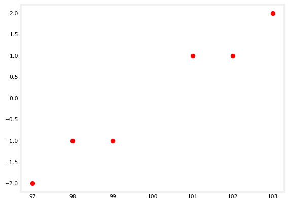
Reducing to 1 dimension instead of 2:
X_reduced_1 = pca_1.inverse_transform(X_trans_1)
X_reduced_1array([[ 98.84002499, -0.75383654],
[ 98.13695576, -1.21074232],
[ 96.97698075, -1.96457886],
[101.15997501, 0.75383654],
[101.86304424, 1.21074232],
[103.02301925, 1.96457886]])plt.plot(X_reduced_1[:, 0], X_reduced_1[:, 1], 'ro')
plt.show()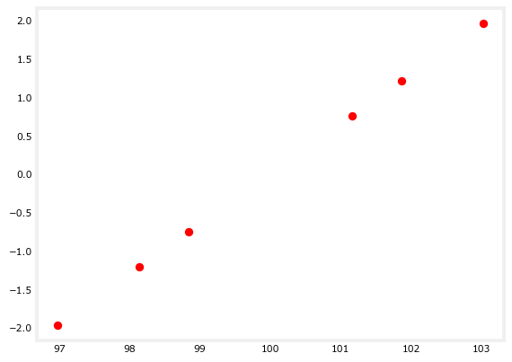
The reconstructed data now sits on a single line. That line is the single principal component used to describe the data, and each example has one coordinate along it to describe its location.
Visualizing the PCA Algorithm
Next, define 10 points in the plane and use them to visualize compressing points into 1 dimension. There are good ways and bad ways to do it.
X = np.array([[-0.83934975, -0.21160323],
[ 0.67508491, 0.25113527],
[-0.05495253, 0.36339613],
[-0.57524042, 0.24450324],
[ 0.58468572, 0.95337657],
[ 0.5663363 , 0.07555096],
[-0.50228538, -0.65749982],
[-0.14075593, 0.02713815],
[ 0.2587186 , -0.26890678],
[ 0.02775847, -0.77709049]])
plt.scatter(X[:, 0], X[:, 1], color="#C00000", s=18)
plt.title("10-point scatterplot", fontsize=11, color="gray")
plt.xlabel("x-axis"); plt.ylabel("y-axis")
plt.show()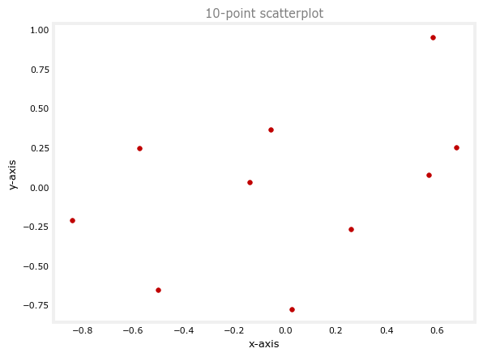
In the notebook, plot_widget() from pca_utils.py opens a widget with a slider. A line rotates through the data, each point drops onto it along a perpendicular segment, and a second panel shows where the projected points land in their new 1-dimensional space. Some rotations place different points almost on top of each other; others keep the points about as separated as they were in the plane. The line PCA generates is the one that keeps the projected points as far apart as possible. The static version below shows four frames of that rotation, with the PCA line (found with PCA(n_components=2) on these 10 points, drawn black in the notebook’s widget) as the last frame:
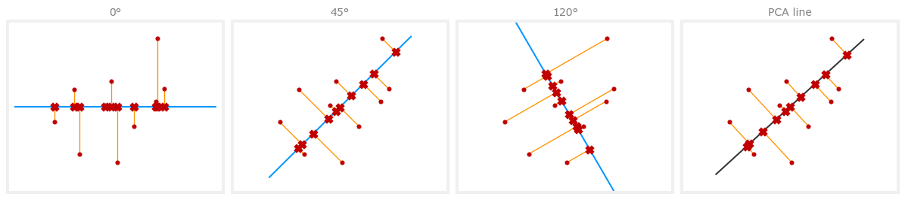
At 120 degrees several projections nearly collide, while along the PCA line the 10 projections stay spread out, the same good-versus-bad-axis story as in How PCA Works, now on the lab’s own dataset.
Visualization of a 3-Dimensional Dataset
The notebook’s next demo generates 150 random points inside a circle (the random_point_circle helper in pca_utils.py), then builds a third feature from them, so the 3-dimensional data actually lies flat in a 2-dimensional subspace, a plane sitting inside 3D space. The notebook draws this with its plot_3d_2d_graphs helper, a plotly figure, reproduced below in the same interactive form. Rotate the left panel until the disk turns edge-on:
def random_point_circle(center=(0, 0), radius=1, n=1):
r = radius * np.sqrt(np.random.rand(n))
theta = np.random.rand(n) * 2 * np.pi
x = center[0] + r * np.cos(theta)
y = center[1] + r * np.sin(theta)
return np.array([x, y]).T
np.random.seed(3)
X = random_point_circle(n=150)Every point satisfies \(x_3 = x_1 + x_2\), so despite living in three dimensions, the data is a disk, two dimensions of actual content, exactly the “pancake” picture from the videos. Two numbers \(z_1, z_2\) per point capture it with nothing lost.
Using PCA in Exploratory Data Analysis
The last part is the payoff, a toy dataset with 500 samples and 1,000 features.
df = pd.read_csv("../../media/principal-components-analysis/toy_dataset.csv")
df.head()| feature_0 | feature_1 | feature_2 | feature_3 | feature_4 | feature_5 | feature_6 | feature_7 | feature_8 | feature_9 | ... | feature_990 | feature_991 | feature_992 | feature_993 | feature_994 | feature_995 | feature_996 | feature_997 | feature_998 | feature_999 | |
|---|---|---|---|---|---|---|---|---|---|---|---|---|---|---|---|---|---|---|---|---|---|
| 0 | 27.422157 | -29.662712 | -23.297163 | -15.161935 | 0.345581 | 3.706750 | -5.507209 | -46.992476 | 5.175469 | -47.768145 | ... | 7.815960 | 24.320965 | -33.987522 | 22.306088 | 31.173511 | 31.264830 | 8.380699 | -25.843189 | 36.706408 | -43.480792 |
| 1 | 3.489482 | -19.153551 | -14.636424 | 14.688258 | 20.114204 | 13.532852 | 34.298084 | 22.982509 | 37.938670 | -35.648144 | ... | 11.145527 | -38.886603 | 44.579337 | 37.308519 | 29.560535 | -10.643331 | -6.499263 | 19.921666 | -3.528982 | 31.068739 |
| 2 | 4.293509 | 22.691579 | -1.045155 | -8.740350 | 12.401082 | 31.362987 | -18.831206 | -35.384557 | 8.161430 | -16.421762 | ... | 48.190331 | -0.503157 | -21.740678 | 15.972237 | 1.122335 | -45.473538 | 10.518065 | -5.818320 | -29.466301 | -13.676685 |
| 3 | -2.139348 | 23.158754 | -26.241206 | 19.426465 | 9.472049 | 8.453948 | 0.637211 | -26.675984 | -43.823329 | 11.840874 | ... | -51.613076 | 13.278858 | -44.179281 | 32.912282 | 4.805774 | 3.960836 | -15.888356 | 61.384773 | 33.112334 | 5.088320 |
| 4 | -35.251034 | 27.281816 | -29.470282 | -21.786865 | 11.806822 | 58.655133 | 5.375230 | 59.740676 | -49.007717 | -21.801155 | ... | 0.010857 | 20.975655 | -21.358371 | 18.709369 | 22.362477 | 41.214565 | -7.217724 | 31.173870 | 37.097532 | -27.509420 |
5 rows × 1000 columns
Is there a pattern in this data? A first instinct is to scatter-plot features against each other, so the following function randomly samples 100 pairwise tuples \((x, y)\) of features to plot (seeded here so the page renders the same grid every time):
def get_pairs(n=100):
from random import randint, seed
seed(1)
i = 0
tuples = []
while i < 100:
x = df.columns[randint(0, 999)]
y = df.columns[randint(0, 999)]
while x == y or (x, y) in tuples or (y, x) in tuples:
y = df.columns[randint(0, 999)]
tuples.append((x, y))
i += 1
return tuples
pairs = get_pairs()fig, axs = plt.subplots(10, 10, figsize=(35, 35))
i = 0
for rows in axs:
for ax in rows:
ax.scatter(df[pairs[i][0]], df[pairs[i][1]], color="#C00000")
ax.set_xlabel(pairs[i][0])
ax.set_ylabel(pairs[i][1])
i += 1
plt.show()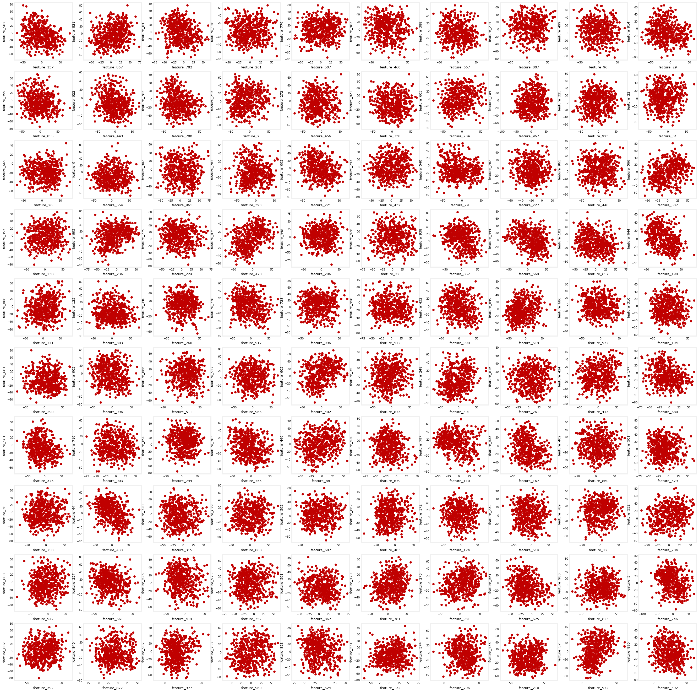
It looks like there is not much information hidden in pairwise features, and with 1,000 features there is no way to check every combination anyway (\(1000 \times 999 / 2\) pairs). The next attempt is linear correlation between features:
# This may take a minute to run
corr = df.corr()# Show all feature pairs with correlation > 0.5 in absolute value, removing
# correlation == 1 to drop each feature's correlation with itself.
# (.dropna() added for newer pandas, where stack() keeps missing entries.)
mask = (abs(corr) > 0.5) & (abs(corr) != 1)
corr.where(mask).stack().dropna().sort_values()feature_81 feature_657 -0.631294
feature_657 feature_81 -0.631294
feature_313 feature_4 -0.615317
feature_4 feature_313 -0.615317
feature_716 feature_1 -0.609056
...
feature_792 feature_547 0.620864
feature_35 feature_965 0.631424
feature_965 feature_35 0.631424
feature_395 feature_985 0.632593
feature_985 feature_395 0.632593
Length: 1870, dtype: float64The extreme correlations sit around \(\pm 0.63\). That does not reveal much either. So let PCA compress the data into a 2-dimensional subspace, a plane, and scatter-plot that:
np.random.seed(1) # sklearn uses a randomized solver on data this wide; seeded for reproducibility
pca = PCA(n_components=2) # the number of components to keep
X_pca = pca.fit_transform(df)
df_pca = pd.DataFrame(X_pca, columns=["principal_component_1", "principal_component_2"])
df_pca.head()| principal_component_1 | principal_component_2 | |
|---|---|---|
| 0 | 46.235641 | -1.672797 |
| 1 | 210.208758 | -84.068249 |
| 2 | 26.352795 | -127.895751 |
| 3 | 116.106804 | -269.368256 |
| 4 | 110.183605 | -279.657306 |
plt.scatter(df_pca["principal_component_1"], df_pca["principal_component_2"], color="#C00000")
plt.xlabel("principal_component_1")
plt.ylabel("principal_component_2")
plt.title("PCA decomposition")
plt.show()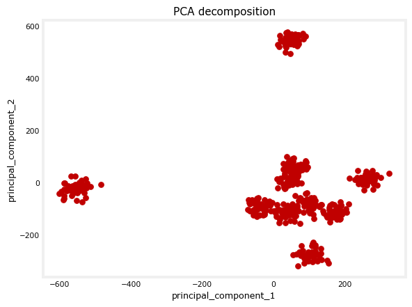
Well-defined clusters, in a dataset where a hundred pairwise scatter plots and a full correlation matrix showed nothing. How many can you spot, 8, 10? And the two components achieve it while preserving only a modest slice of the variance:
sum(pca.explained_variance_ratio_)np.float64(0.14572843555106268)About 14.6 percent. Running PCA with 3 components pulls in more information from the data:
np.random.seed(1)
pca_3 = PCA(n_components=3)
X_t = pca_3.fit_transform(df)
df_pca_3 = pd.DataFrame(X_t, columns=["principal_component_1",
"principal_component_2",
"principal_component_3"])
sum(pca_3.explained_variance_ratio_)np.float64(0.20806257816093238)Now about 21 percent of the variance is preserved. The notebook draws this with plotly’s rotatable 3D scatter, and so does this page. Rotating it separates the groups clearly, and 10 clusters can be counted:
import plotly.express as px
fig = px.scatter_3d(df_pca_3, x="principal_component_1",
y="principal_component_2",
z="principal_component_3").update_traces(
marker=dict(color="#C00000", size=2.5))
fig.show()That is PCA doing exploratory data analysis for real. A thousand opaque features go in, a plot a person can look at comes out, and no amount of pairwise plotting was going to reveal that structure.